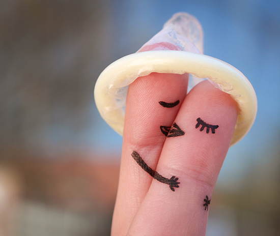

How to not get Coronavirus if you already have AIDS
NOTE: Original story didn't make it clear. This is an official British Columbia Centre for Disease Control article.
Original article here
TDC_ARTICLE_STARTyes, this image is from the article
If you’re feeling fine and have no symptoms of COVID-19, you can still have sex. If you’re feeling sick, skip sex.
Sex can be very important for mental, social and physical well-being; it is a part of everyday life. People can, will and should continue to have sex during the COVID-19 pandemic. Messages that discourage or shame people from sexual contact can be harmful and may discourage people from seeking essential sexual health services.
You should always make informed and consensual decisions about sex. This resource offers some tips and strategies to help reduce the spread of COVID-19 to you, your partner(s) and your community. TDC_ARTICLE_STOP
I love how this article, on a government website no less, opens an image that can only be described as completely unserious. Then we move on to some advice that is about as serious as the first image. Really sets the tone. It’s also worth mentioning for those who didn’t pick up on this, this is for faggots. If you are living with someone you are going to get their colds and whatever. This is for faggots going to fuck parties. If you understand that, the rest of this article makes more sense.
TDC_ARTICLE_STARTThe COVID-19 virus is spread by liquid droplets in saliva and respiratory (breathing) fluids when a person coughs, sneezes and, sometimes, when a person talks or sings. It can be spread to people who are within 2 metres (about 6 ft) of a person with the virus if the droplets are inhaled (breathed in) or land in the mouth or nose of someone nearby - whether you are engaged in sexual activity or not. It can also be passed by touching contaminated surfaces and then touching the face, eyes, nose, or mouth.
The virus has been found in semen and feces (poop). It is not yet known if the virus is found in blood or internal genitalia/vaginal fluids. It is not yet clear if the virus can be transmitted through sex. You are your safest sex partner; your next-safest sex partner(s) is/are the person(s) you live with, or the person(s) who has close contact with only you and no one else.TDC_ARTICLE_STOP
Hey, here’s a crazy idea: Maybe if you don’t really know how the deadly disease is spread, don’t tell people how they can fuck each other safely. Luckily, Covid 19 is the absolute most overblown pandemic in all of history, because our government response has been horrible to the point of parody.
TDC_ARTICLE_STARTIf you’re feeling sick, skip sex
You should not have sex with anyone if you or your partner(s) has:
Symptoms of COVID-19,
Been a contact of, or had exposure to, a known case of COVID-19, or
Been advised to self-isolate.TDC_ARTICLE_STOP
Yeah, notice the partner(s). Again, this is for faggots going to fuckparties.
TDC_ARTICLE_STARTIf you’re feeling well and have no symptoms of COVID-19, you can have sex
Masturbating:
You are your safest sex partner. Masturbating by yourself (solo sex) will not spread COVID-19. If you masturbate with a partner(s), physical distancing will lower your chance of getting COVID-19.
Virtual Sex:
Video dates, phone chats, sexting, online chat rooms and group cam rooms are ways to engage in sexual activity with no chance of spreading COVID-19. Be aware of the risks of sharing information or photos online, and web camming. Some people do not share personal information or show their face or other identifiable body parts, for more privacy.
Sex with partner(s):
Having 1, or a few, regular sex partner(s) can help lower the chances of being exposed to COVID-19. Talk with your sex partner(s) about:
The types of sexual activities you want to have with them, and
The precautions that you can each take to make sex safer for you and your sex partner(s), like wearing a mask and social distancing, and
Whether you or your sex partner(s), or anyone you are in contact with, have a higher chance of getting a more serious COVID-19 illness (such as someone with an underlying medical condition like diabetes, lung disease, cancer or a weakened immune system)
Talking about these things will help you and your sex partner(s) make informed decisions about sex, your health and the health of others.TDC_ARTICLE_STOP
Wow. Really nice to know that my taxdollars are going to work explaining to me that masturbating doesn’t spread covid. I was about to feel bad about masturbating at the bus stop, but now that I know that it doesn’t spread Covid, I feel great about it. Fuck that stuck up prude who ran away screaming, she was a cunt.
As far as virtual sex goes there is something that is both old-fashioned about the term and yet it is the cutting edge of degeneracy to have some probably anal-fetishizing government bureaucrat explain to us how it’s okay to go to virtual fuck parties. I honestly have not been invited to any of those, nor do I plan on going, but it’s good to know that Covid is a virus that exists in the real world instead of on your computer. Perhaps next they can tell us that you can’t use Avast Anti-Virus software to get rid of this. Thanks for informing us!
Finally, they make sure to tell anus hungry faggots that maybe fucking 40 guys a month could lead to harmful COVID exposure. Remember, this article will be less confusing to you if you understand that it’s for AIDS ridden faggots. Although I do love the part where they tell you to maintain social distancing while fucking. Like, how is that supposed to work? Do you have a 6 foot cock? If not, then you’re pretty much going to have to be face to face when this is happening. Also, how is wearing a mask going to accomplish fuck all if you’re sweating all over each other? I’m starting to think that this is some even weirder fetish on the part of the author.
TDC_ARTICLE_STARTSteps to protect yourself during sex
Here are some ways to lower the chances of being exposed to COVID-19 during sex with others:
Ask your partner(s) if they’re feeling unwell or have any symptoms of COVID-19.
Consider keeping contact information for your partner(s) so that you can reach them if one of you develops symptoms.
Before and after sex:
Wash your body with soap and water.
Wash your hands with soap and water for at least 20 seconds.
Wash sex toys thoroughly per the manufacturer’s instructions. Most, but not all, can be cleaned with mild unscented soap and water. Do not share them with multiple partners.
Wear a face covering or mask. Heavy breathing during sex can create more droplets that may transmit COVID-19.
Avoid or limit kissing and saliva exchange.
Choose sexual positions that limit face-to-face contact.
Use barriers, like walls (e.g., glory holes), that allow for sexual contact but prevent close face-to-face contact.
Using condoms, lubricant, and dental dams may help to further reduce the chances by minimizing contact with saliva, semen, feces, blood and/or internal genitalia/vaginal fluids during sex.TDC_ARTICLE_STOP
And there it is. Put on a mask and shove your cock through this glory hole and you’re pretty much fine. Also put a layer of saran wrap over the other faggots asses when you shove your tongue in there. Gross, but safe! YAY!
That’s pretty much it. I have a sort of idle curiosity as to how many people were responsible for writing that article, editing it, and giving it the go ahead. I wonder if any of them were actually normal, or if they were all anal-fetishists, because the article is hilariously bizarre if you don’t understand that it’s for orgy-going fudge packers. Or maybe I underestimate my audience, and you’re all sitting there going “well FINALLY I’m getting a use for all these glory holes that I have lying around.”
These are serious guys.